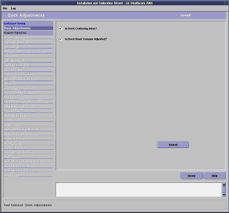

GE Exclusive Use Only
Direction 5440000, Rev# 5
Signa HDxt Service Methods
Module Version 4.0, Version Date 11/4/10
GE Exclusive Use Only |
| Required Persons | Preliminary Reqs | Procedure | Finalization |
|---|---|---|---|
| 1 | Not Applicable | 60 mins | Not Applicable |
During Dock Adjustments, two tasks must be completed and checked off:
Dock Centering
Dock Hook Tension Adjustment
Insert the Service Key.
Launch the Service Browser (Common Service Desktop).
Click the Calibration tab.
| NOTE: | If in Install or Upgrade mode, select [Install and Calibration Wizard] and the link: Click here to start this tool. |
The second step in the ICW is Dock Adjustments as shown below. Verify that all previous steps in the ICW are complete; they should be highlighted and blue in color.
Illustration 1: ICW Dock Adjustment

Perform Dock Centering and Dock Hardware Adjustments. When completed, check the box next to Is Dock Centering done?”
Perform Dock Hook Tension Adjustment. When completed, check the box next to Is Dock Hook Tension Adjusted?
Click [Submit]. This completes the Dock Adjustment section of the ICW.
Return to the Installation and Calibration Wizard for information regarding how to advance to the next calibration and for links to other calibration procedures.